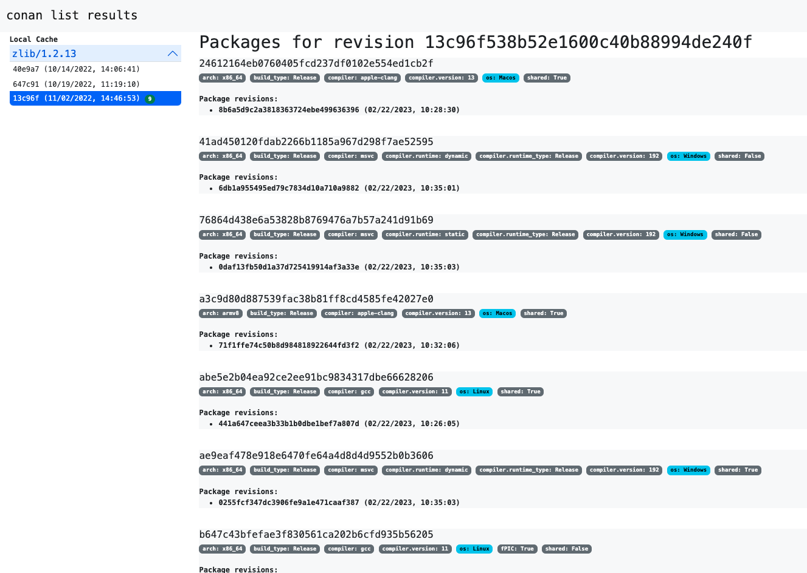

conan list¶
$ conan list -h
usage: conan list [-h] [-v [V]] [-f FORMAT] [-p PACKAGE_QUERY] [-r REMOTE]
[-c] [-g GRAPH] [-gb GRAPH_BINARIES] [-gr GRAPH_RECIPES]
[--lru LRU]
[pattern]
List existing recipes, revisions, or packages in the cache (by default) or the remotes.
positional arguments:
pattern A pattern in the form
'pkg/version#revision:package_id#revision', e.g:
zlib/1.2.13:* means all binaries for zlib/1.2.13. If
revision is not specified, it is assumed latest one.
options:
-h, --help show this help message and exit
-v [V] Level of detail of the output. Valid options from less
verbose to more verbose: -vquiet, -verror, -vwarning,
-vnotice, -vstatus, -v or -vverbose, -vv or -vdebug,
-vvv or -vtrace
-f FORMAT, --format FORMAT
Select the output format: json, html, compact
-p PACKAGE_QUERY, --package-query PACKAGE_QUERY
List only the packages matching a specific query, e.g,
os=Windows AND (arch=x86 OR compiler=gcc)
-r REMOTE, --remote REMOTE
Remote names. Accepts wildcards ('*' means all the
remotes available)
-c, --cache Search in the local cache
-g GRAPH, --graph GRAPH
Graph json file
-gb GRAPH_BINARIES, --graph-binaries GRAPH_BINARIES
Which binaries are listed
-gr GRAPH_RECIPES, --graph-recipes GRAPH_RECIPES
Which recipes are listed
--lru LRU List recipes and binaries that have not been recently
used. Use a time limit like --lru=5d (days) or
--lru=4w (weeks), h (hours), m(minutes)
The conan list command can list recipes and packages from the local cache, from the
specified remotes or from both. This command uses a reference pattern as input. The
structure of this pattern is based on a complete Conan reference that looks like:
name/version@user/channel#rrev:pkgid#prev
This pattern supports using * as wildcard as well as #latest to specify the latest revision
(though that might not be necessary in most cases, by default Conan will be listing the latest revisions).
Using it you can list:
Recipe references (
name/version@user/channel).Recipe revisions (
name/version@user/channel#rrev).Package IDs and their configurations (
name/version@user/channel#rrev:pkgids).Package revisions (
name/version@user/channel#rrev:pkgids#prev).
Warning
The json output of the conan list --format=json is in preview.
See the Conan stability section for more information.
Let’s see some examples on how to use this pattern:
Listing recipe references¶
# Make sure to quote the argument
$ conan list "*"
Local Cache
hello
hello/2.26.1@mycompany/testing
hello/2.20.2@mycompany/testing
hello/1.0.4@mycompany/testing
hello/2.3.2@mycompany/stable
hello/1.0.4@mycompany/stable
string-view-lite
string-view-lite/1.6.0
zlib
zlib/1.2.11
$ conan list zlib
Local Cache
zlib
zlib/1.2.11
zlib/1.2.12
As we commented, you can also use the * wildcard inside the reference you want to
search.
# Make sure to quote the argument
$ conan list "zlib/*"
Local Cache
zlib
zlib/1.2.11
zlib/1.2.12
You can also use version ranges in the version field to define the versions you want:
# Make sure to quote the argument
$ conan list "zlib/[<1.2.12]" -r=conancenter
Local Cache
zlib
zlib/1.2.11
$ conan list "zlib/[>1.2.11]" -r=conancenter
Local Cache
zlib
zlib/1.2.12
zlib/1.2.13
Use the pattern for searching only references matching a specific channel:
$ conan list "*/*@*/stable"
Local Cache
hello
hello/2.3.2@mycompany/stable
hello/1.0.4@mycompany/stable
Use the ...@ pattern for searching only references that don’t have user and channel:
$ conan list "*/*@"
Local Cache
string-view-lite
string-view-lite/1.6.0
zlib
zlib/1.2.11
Listing recipe revisions¶
The shortest way of listing the latest recipe revision for a recipe is using the
name/version@user/channel as the pattern:
$ conan list zlib/1.2.11
Local Cache
zlib
zlib/1.2.11
revisions
ffa77daf83a57094149707928bdce823 (2022-11-02 13:46:53 UTC)
This is equivalent to specify explicitly that you want to list the latest recipe revision
using the #latest placeholder:
$ conan list zlib/1.2.11#latest
Local Cache
zlib
zlib/1.2.11
revisions
ffa77daf83a57094149707928bdce823 (2022-11-02 13:46:53 UTC)
To list all recipe revisions use the * wildcard:
$ conan list "zlib/1.2.11#*""
Local Cache
zlib
zlib/1.2.11
revisions
ffa77daf83a57094149707928bdce823 (2022-11-02 13:46:53 UTC)
8b23adc7acd6f1d6e220338a78e3a19e (2022-10-19 09:19:10 UTC)
ce3665ce19f82598aa0f7ac0b71ee966 (2022-10-14 11:42:21 UTC)
31ee767cb2828e539c42913a471e821a (2022-10-12 05:49:39 UTC)
d77ee68739fcbe5bf37b8a4690eea6ea (2022-08-05 17:17:30 UTC)
Listing package IDs¶
The shortest way of listing all the package IDs belonging to the latest recipe revision is
using name/version@user/channel:* as the pattern:
# Make sure to quote the argument
$ conan list "zlib/1.2.11:*"
Local Cache
zlib
zlib/1.2.11
revisions
d77ee68739fcbe5bf37b8a4690eea6ea (2022-08-05 17:17:30 UTC)
packages
d0599452a426a161e02a297c6e0c5070f99b4909
info
settings
arch: x86_64
build_type: Release
compiler: apple-clang
compiler.version: 12.0
os: Macos
options
fPIC: True
shared: False
ebec3dc6d7f6b907b3ada0c3d3cdc83613a2b715
info
settings
arch: x86_64
build_type: Release
compiler: gcc
compiler.version: 11
os: Linux
options
fPIC: True
shared: False
Note
Here the #latest for the recipe revision is implicit, i.e., that pattern is
equivalent to zlib/1.2.11#latest:*
To list all the package IDs for all the recipe revisions use the * wildcard in the
revision # part:
# Make sure to quote the argument
$ conan list "zlib/1.2.11#*:*"
zlib
zlib/1.2.11
revisions
d77ee68739fcbe5bf37b8a4690eea6ea (2022-08-05 17:17:30 UTC)
packages
d0599452a426a161e02a297c6e0c5070f99b4909
info
settings
arch: x86_64
build_type: Release
compiler: apple-clang
compiler.version: 12.0
os: Macos
options
fPIC: True
shared: False
e4e1703f72ed07c15d73a555ec3a2fa1 (2022-07-04 21:21:45 UTC)
packages
d0599452a426a161e02a297c6e0c5070f99b4909
info
settings
arch: x86_64
build_type: Release
compiler: apple-clang
compiler.version: 12.0
os: Macos
options
fPIC: True
shared: False
Listing package revisions¶
The shortest way of listing the latest package revision for a specific recipe revision and
package ID is using the pattern name/version@user/channel#rrev:pkgid
$ conan list zlib/1.2.11#8b23adc7acd6f1d6e220338a78e3a19e:fdb823f07bc228621617c6397210a5c6c4c8807b
Local Cache
zlib
zlib/1.2.11
revisions
8b23adc7acd6f1d6e220338a78e3a19e (2022-08-05 17:17:30 UTC)
packages
fdb823f07bc228621617c6397210a5c6c4c8807b
revisions
4834a9b0d050d7cf58c3ab391fe32e25 (2022-11-18 12:33:31 UTC)
To list all the package revisions for for the latest recipe revision:
# Make sure to quote the argument
$ conan list "zlib/1.2.11:*#*"
Local Cache
zlib
zlib/1.2.11
revisions
6a6451bbfcb0e591333827e9784d7dfa (2022-12-29 11:51:39 UTC)
packages
b1d267f77ddd5d10d06d2ecf5a6bc433fbb7eeed
revisions
67bb089d9d968cbc4ef69e657a03de84 (2022-12-29 11:47:36 UTC)
5e196dbea832f1efee1e70e058a7eead (2022-12-29 11:47:26 UTC)
26475a416fa5b61cb962041623748d73 (2022-12-29 11:02:14 UTC)
d15c4f81b5de757b13ca26b636246edff7bdbf24
revisions
a2eb7f4c8f2243b6e80ec9e7ee0e1b25 (2022-12-29 11:51:40 UTC)
Note
Here the #latest for the recipe revision is implicit, i.e., that pattern is
equivalent to zlib/1.2.11#latest:*#*
Listing graph artifacts¶
When the conan list --graph=<graph.json> graph json file is provided, the command will list the binaries in it.
By default, it will list all recipes and binaries included in the dependency graph. But the --graph-recipes=<recipe-mode>
and --graph-binaries=<binary-mode> allow specifying what artifacts have to be listed in the final result, some examples:
conan list --graph=graph.json --graph-binaries=buildlist exclusively the recipes and binaries that have been built from sourcesconan list --graph=graph.json --graph-recipes=*list exclusively the recipes, all recipes, but no binariesconan list --graph=graph.json --graph-binaries=downloadlist exclusively the binaries that have been downloaded in the lastconan createorconan install
List json output format¶
Note
Best practices
The text output in the terminal should never be parsed or relied on for automation, and it is intended for human reading only. For any automation, the recommended way is using the formatted output as json
The conan list ... --format=json will return a json output in stdout (which can be redirected to a file)
with the following structure:
# Make sure to quote the argument
$ conan list "zlib/1.2.11:*#*" --format=json
{
"Local Cache": {
"zli/1.0.0": {
"revisions": {
"b58eeddfe2fd25ac3a105f72836b3360": {
"timestamp": "2023-01-10 16:30:27 UTC",
"packages": {
"9a4eb3c8701508aa9458b1a73d0633783ecc2270": {
"revisions": {
"d9b1e9044ee265092e81db7028ae10e0": {
"timestamp": "2023-01-10 22:45:49 UTC"
}
},
"info": {
"settings": {
"os": "Linux"
}
}
},
"ebec3dc6d7f6b907b3ada0c3d3cdc83613a2b715": {
"revisions": {
"d9b1e9044ee265092e81db7028ae10e0": {
"timestamp": "2023-01-10 22:45:49 UTC"
}
},
"info": {
"settings": {
"os": "Windows"
}
}
}
}
}
}
}
}
}
List html output format¶
The conan list ... --format=html will return a html output in stdout (which can be redirected to a file)
with the following structure:
$ conan list "zlib/1.2.13#*:*#*" --format=html -c > list.html
Here is the rendered generated HTML.
List compact output format¶
For developers, it can be convenient to use the --format=compact output, because it allows to copy and paste
full references into other commands (like for example conan cache path):
$ conan list "zlib/1.2.13:*" -r=conancenter --format=compact
conancenter
zlib/1.2.13
zlib/1.2.13#97d5730b529b4224045fe7090592d4c1%1692672717.68 (2023-08-22 02:51:57 UTC)
zlib/1.2.13#97d5730b529b4224045fe7090592d4c1:d62dff20d86436b9c58ddc0162499d197be9de1e
settings: Macos, x86_64, Release, apple-clang, 13
options(diff): fPIC=True, shared=False
zlib/1.2.13#97d5730b529b4224045fe7090592d4c1:abe5e2b04ea92ce2ee91bc9834317dbe66628206
settings: Linux, x86_64, Release, gcc, 11
options(diff): shared=True
zlib/1.2.13#97d5730b529b4224045fe7090592d4c1:ae9eaf478e918e6470fe64a4d8d4d9552b0b3606
settings: Windows, x86_64, Release, msvc, dynamic, Release, 192
options(diff): shared=True
...
The --format=compact will show the list of values for settings, and it will only show the differences (“diff”)
for options, that is, it will compute the common denominator of options for all displayed packages, and will print
only those values that deviate from that common denominator.